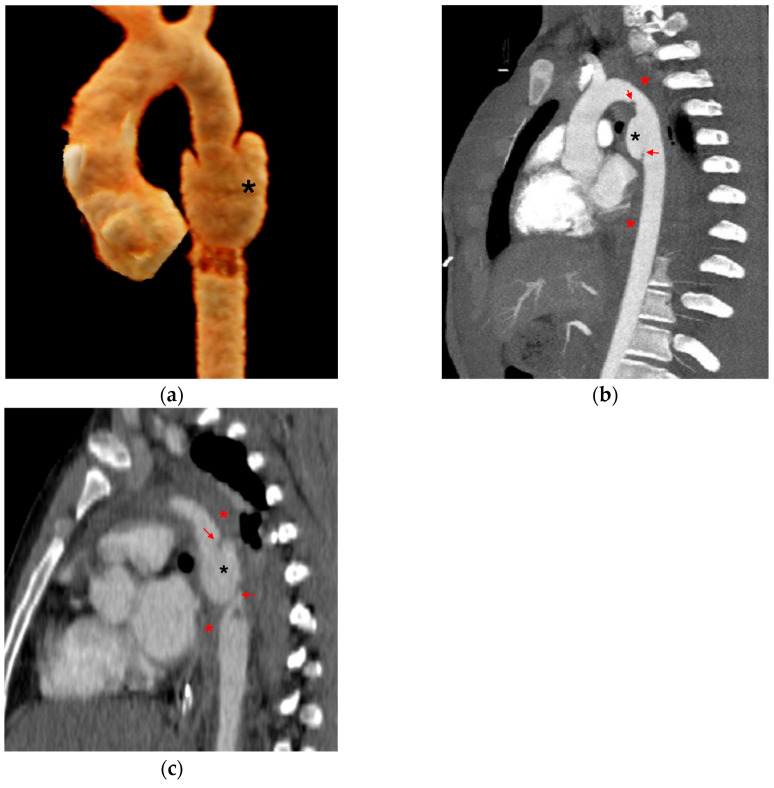

Ficha del catálogo
Lesión aórtica traumática
- Sistema
- Cardiovascular
- Modalidad
- TC
- Región
- Tórax
- Dificultad
- Avanzado
Es la lesión de la pared aórtica producida por un traumatismo cerrado de alta energía, típicamente por desaceleración brusca en accidentes de tránsito o caídas de altura. El punto más vulnerable es el istmo, inmediatamente distal al origen de la arteria subclavia izquierda, donde la aorta relativamente móvil queda anclada al ligamento arterioso. Es una causa importante de muerte prehospitalaria y exige diagnóstico inmediato.
Técnica
La angiotomografía torácica con contraste es el estudio de elección en el paciente politraumatizado estable y debe realizarse con cortes finos y sincronización electrocardiográfica cuando esté disponible. La radiografía inicial sirve como filtro rápido pero tiene sensibilidad limitada. El ecocardiograma transesofágico es una alternativa en el paciente inestable que permanece en quirófano.
Qué observar
- Contorno aórtico irregular o escalón en el istmo
- Colgajo intimal focal o defecto de repleción adherido a la pared
- Pseudoaneurisma con cuello estrecho y cambio brusco de calibre
- Hematoma mediastínico y su relación de contacto con la aorta
- Signos radiográficos indirectos como ensanchamiento mediastínico y casquete pleural apical
- Lesiones asociadas de pared torácica, pulmón y vísceras abdominales
Hallazgos
El espectro va desde un desgarro intimal mínimo, visible como una irregularidad lineal sin deformidad del contorno, hasta la rotura contenida con pseudoaneurisma y hematoma periaórtico. Los signos radiográficos de sospecha incluyen ensanchamiento mediastínico, borramiento del botón aórtico, descenso del bronquio principal izquierdo, desviación de la sonda nasogástrica hacia la derecha y casquete pleural apical izquierdo.
Perlas
Un hematoma mediastínico que no contacta con la aorta suele proceder de venas mediastínicas o de focos de fractura y no implica lesión aórtica; en cambio, la sangre que rodea de forma directa la aorta obliga a examinar el istmo con cortes finos aunque el contorno parezca conservado.
Diagnóstico diferencial
- Divertículo del conducto arterioso
- Es una prominencia lisa de la cara anteromedial del istmo con ángulos obtusos y sin hematoma acompañante.
- Hematoma mediastínico venoso
- Se dispone alrededor de estructuras venosas o de focos de fractura y respeta el plano graso periaórtico.
- Artefacto de movimiento en la aorta ascendente
- Produce líneas que cruzan el borde del vaso y varían entre cortes contiguos.
- Placa de ateroma con trombo
- Aparece en pacientes de edad avanzada con calcificaciones difusas y sin contexto traumático agudo.
Simuladores
- Divertículo del conducto arterioso en el istmo
- Restos tímicos o grasa mediastínica que simulan hematoma
- Vena intercostal superior izquierda adyacente al arco
Por modalidad
- RX
- Sirve de filtro rápido con signos indirectos de hematoma mediastínico, poco sensibles y poco específicos.
- TC
- Confirma el diagnóstico, gradúa la lesión y define el resto del daño torácico y abdominal.
Protocolo
Protocolo de politraumatismo con angiotomografía torácica en fase arterial, cortes submilimétricos y reconstrucciones sagitales oblicuas del istmo. Se extiende el estudio al abdomen y la pelvis en fase portal. La sincronización electrocardiográfica reduce el artefacto de pulsación en la aorta ascendente cuando la sospecha es alta.
Clasificación
Se gradúa por la profundidad del daño parietal en desgarro intimal, hematoma intramural, pseudoaneurisma y rotura franca, escala que orienta la urgencia terapéutica. Las lesiones mínimas pueden manejarse de forma conservadora con control estrecho, mientras que el pseudoaneurisma requiere reparación, hoy habitualmente endovascular.
Errores frecuentes
- Atribuir todo hematoma mediastínico a lesión aórtica
- Confundir el divertículo del conducto arterioso con un pseudoaneurisma
- Descartar lesión por una radiografía de tórax sin ensanchamiento mediastínico

trauma aorta istmo aórtico pseudoaneurisma hematoma mediastínico politraumatismo angiotomografía